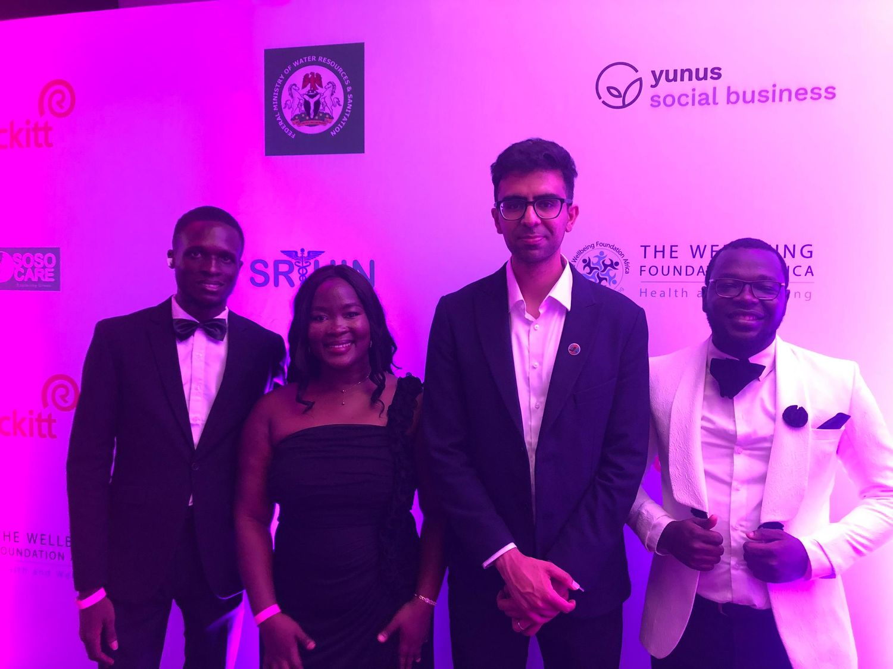
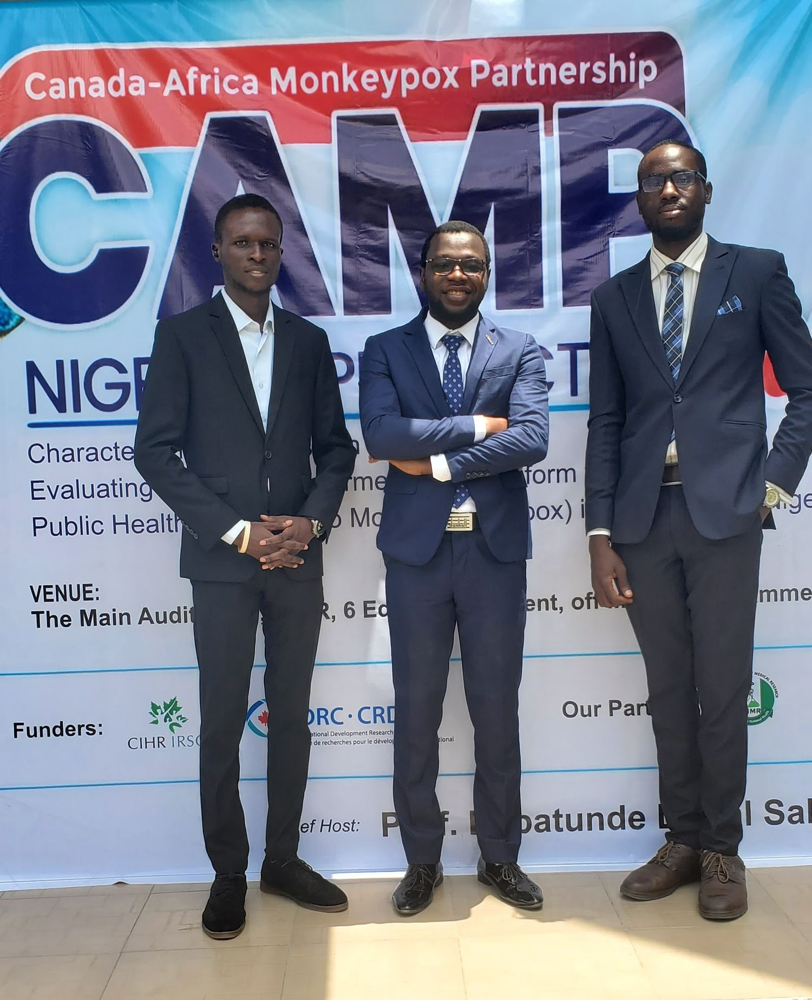

Experience
Three continents, one approach
From clinical practice and disease surveillance in Nigeria, through immunology research in the United Kingdom, to molecular epidemiology in the United States.
Full bio
Dr. Moyinoluwa Oladoye is a veterinarian and One Health scientist whose career runs from village abattoirs in south-western Nigeria to a molecular parasitology laboratory in the Texas Panhandle. He is a PhD researcher in One Health Sciences at the Texas Tech University, where he studies how zoonotic parasites move between livestock, companion animals, horses, shelter populations and the people who live alongside them.
He arrived at Texas Tech University (US) on a fully funded PhD assistantship after graduating top of his cohort from the University of Leicester (UK), where he completed an MSc in Immunity, Infection and Chronic Disease with Distinction as a Commonwealth Scholar. His Doctor of Veterinary Medicine from the University of Ibadan (Nigeria) was also awarded with Distinction.
Before doctoral study, he spent four years leading public health research and programmes in Nigeria. As Programs Director of the Slum and Rural Health Initiative, he directed more than ten community health projects reaching around 50,000 people in underserved and marginalized communities. He led formative research on mpox vaccine acceptance across four Nigerian states within a US$3 million Canada-Africa partnership, co-investigated a trachoma education study in internally displaced persons camps in Abuja, and ran monitoring and evaluation for Reckitt's Dettol Hygiene Quest, Nigeria's largest school hygiene campaign.
His ideas have won international recognition, including the 2023 FAO World Food Forum Transformative Research Challenge and selection as a 2024 Commonwealth Scholar by the Foreign, Commonwealth and Development Office. He is the pioneer Editor-in-Chief of the Betta Health Equity Journal and a Global Burden of Disease collaborator.
A first-generation academic, he co-founded The Winning Circle, a network that has helped African students secure scholarships and research placements around the world, and he spends part of every week mentoring the next cohort.
Dr. Oladoye holds a Doctor of Veterinary Medicine (Distinction) from the University of Ibadan (2020), an MSc in Immunity, Infection and Chronic Disease (Distinction, Best Graduating Student) from the University of Leicester (2025) and is completing a PhD in One Health Sciences at Texas Tech University. He has trained at the ICPSR Summer Program in Quantitative Methods at the University of Michigan as an Opportunity Scholar, at the Wellcome Genome Campus in bacterial genomics, and with the Institute for Health Metrics and Evaluation on Global Burden of Disease methods. His laboratory skills span DNA extraction, PCR and qPCR, agarose gel electrophoresis, molecular cloning, fluorescence microscopy, and bioinformatics, with data analysis in R, Python, SPSS and GraphPad Prism.


Research appointments
-
Aug 2026 – Present
Research Assistant, New World Screwworm One Health Project
Texas Tech University, United States
Contributing molecular, diagnostic and surveillance work to a Texas University Fund investment grant building cross-institutional research capacity against New World screwworm, a re-emerging livestock and zoonotic threat.
-
Aug 2025 – Present
Graduate Research Assistant
Texas Tech University School of Veterinary Medicine, United States
Conducting molecular and genomic investigations of zoonotic parasites in the Laboratory of Parasite-Host Metabolism and Antiparasitic Innovation: experimental design, sample processing, qPCR and sequencing, statistical analysis, and manuscript preparation. Trains and supports new laboratory members.
-
Dec 2020 – Present
Associate Research Scientist
Center for One Health and Zoonotic Diseases (COHAZD)
Contributing to innovative projects focused on predicting, preventing, and controlling diseases before they become disasters.
-
Sept 2024 – Aug 2025
Graduate Researcher
Infection, Immunity and Inflammation Laboratory, University of Leicester, United Kingdom
Investigated triacylglycerol lipid bodies in Rhodococcus equi and their role in bacterial survival under environmental stress, using bacterial culture, fluorescence microscopy, lipid analysis and RT-qPCR.
-
Apr 2024 – Sept 2024
Research Officer
PPR Awareness and Control Project, Nigeria
Interviewed 101 farmers on vaccine access and led vaccination of 250 small ruminants.
Professional and public health roles
-
Jan 2025 – Present
Editor-in-Chief
Betta Health Equity Journal
Leads the editorial board, oversees peer review and sets the journal's direction as a platform for equitable access to scientific evidence.
-
Apr 2023 – Aug 2024
Research Officer
Canada-Africa Mpox Partnership Project
Led the research team conducting formative studies on community willingness to accept mpox vaccination across four Nigerian states and worked with the Nigerian Institute of Medical Research on evaluating tecovirimat and the Imvamune vaccine.
-
Oct 2022 – Aug 2024
Monitoring and Evaluation Officer
Reckitt Dettol Hygiene Quest Programme
Evaluated the effect of WASH interventions on knowledge, attitudes and behaviour among schoolchildren, mothers and pregnant women across three Nigerian states, in partnership with Reckitt and the Wellbeing Foundation.
-
Aug 2022 – Aug 2024
Programs Director
Slum and Rural Health Initiative, Nigeria
Led the design and implementation of more than ten community health projects reaching about 50,000 people, wrote grant proposals and managed government and private partnerships.
-
Jul 2021 – Apr 2022
Veterinary Officer
Abia State Ministry of Agriculture, Nigeria
Surveillance and reporting of notifiable zoonotic diseases; meat inspection and food safety assessment at the state abattoir.
Invited talks and panels
- Panelist, Mpox Project Dissemination Conference, with the London School of Hygiene and Tropical Medicine and UK Public Health Rapid Support Team (2026)
- Lightning talk, “One Health, AI and Zoonotic Surveillance”, AI, Animals and Digital Minds Conference (2025)
Professional memberships
American College of Epidemiology · American Society for Microbiology · American Society of Tropical Medicine and Hygiene · American Association of Equine Practitioners · Association for Veterinary Epidemiology and Preventive Medicine · International Society for Infectious Diseases · International Veterinary Vaccinology Network · Sigma Xi (Associate Member)